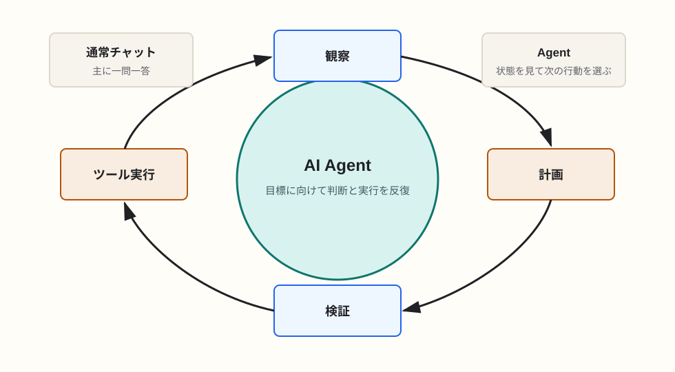

AI Agent
AI Agentの定義、通常のLLMチャットスレッドとの違い
AI Agentは、与えられた目標に向けて状況を観察し、計画し、ツールを実行し、結果を見て次の行動を決めるシステムです。単に返答するチャットより、行動のループを持つ点が本質的な違いです。
簡潔なQ&A
- Q. AI Agentとは何か？
- A. 目標を受け取り、必要な手順を考え、ツールや外部環境を使いながら、結果を確認して作業を進めるAIシステムです。
- Q. 普通のLLMチャットとの違いは？
- A. 通常チャットは主に「入力に対して返答する」形です。Agentは「目標達成のために、複数ステップの判断と実行を繰り返す」形です。
- Q. LLMそのものがAgentなのか？
- A. 厳密には違います。LLMはAgentの中核になる推論・言語生成エンジンです。AgentはLLMに加えて、ツール、メモリ、状態管理、実行環境、停止条件などを含むシステムです。

AI Agentの定義
AI Agentは、環境から情報を受け取り、目標に照らして次の行動を選び、その行動の結果をもとにさらに判断を続けるシステムです。LLMを使う場合、LLMは「何をすべきか」を考える中心になりますが、Agent全体はそれだけではありません。
実用上は、Agentを「LLMにツール利用、状態管理、反復実行の仕組みを足したもの」と捉えるとわかりやすいです。コードを書くAgentなら、ファイルを読む、変更する、テストを実行する、失敗を見て修正する、といった一連の作業を行います。
Agentを構成する要素
1. 目標
Agentは単発の質問ではなく、達成すべき目標を持ちます。例として「このバグを直す」「競合製品を調査して表にする」「請求書を分類する」などがあります。
2. 状態とメモリ
現在どこまで進んだか、何を試したか、どの情報が重要かを保持します。チャット履歴だけでなく、作業計画、ファイル差分、検索結果、外部システムの状態を含むことがあります。
3. ツール
Agentは、検索、ファイル操作、コード実行、ブラウザ操作、DB問い合わせ、API呼び出しなどのツールを使います。MCPのような仕組みは、このツール接続を標準化するために使われます。
4. 実行ループ
Agentは「観察する、考える、行動する、結果を見る」を繰り返します。このループがあることで、途中の失敗や不足情報に対応できます。ただし、無限に動かないように停止条件や権限境界も必要です。
通常のLLMチャットスレッドとの違い
通常のLLMチャットは、ユーザーが入力し、モデルが返答するという対話が中心です。もちろん、チャットでも長い相談や段階的な作業はできます。しかし、主導権は多くの場合ユーザー側にあり、モデルは各ターンで応答します。
一方、Agentはユーザーの目標を受け取った後、自分で次のステップを選びます。必要なら検索し、ファイルを読み、コマンドを実行し、結果を見て次の修正に進みます。つまり、会話の返答だけでなく、外部世界に対する操作が含まれます。
比較表
| 観点 | 通常のLLMチャット | AI Agent |
|---|---|---|
| 中心 | 会話への返答 | 目標達成に向けた行動 |
| 進め方 | ユーザーの追加指示で進む | 必要な手順を自分で選ぶ |
| 外部操作 | ない、または限定的 | ツール、API、ファイル、ブラウザなどを使う |
| 状態管理 | 主に会話履歴 | 計画、作業結果、環境状態、メモリを持つ |
| リスク | 誤回答が中心 | 誤操作、過剰実行、権限逸脱も考慮が必要 |
Agentに必要な安全設計
Agentは外部環境に作用するため、通常チャットより安全設計が重要です。できる操作を限定する、危険な操作は人間に確認する、ログを残す、タイムアウトを設ける、権限を分ける、といった設計が必要になります。
特にコード実行や本番データ操作では、Agentに広すぎる権限を与えるべきではありません。便利さは「勝手に何でもできること」ではなく、「許可された範囲で作業を進め、必要なところで人間に確認できること」から生まれます。
要点
AI Agentは、LLMを中心にした自律的な作業システムです。通常チャットとの違いは、返答だけで終わらず、状態を見ながらツールを使って目標達成まで反復する点にあります。